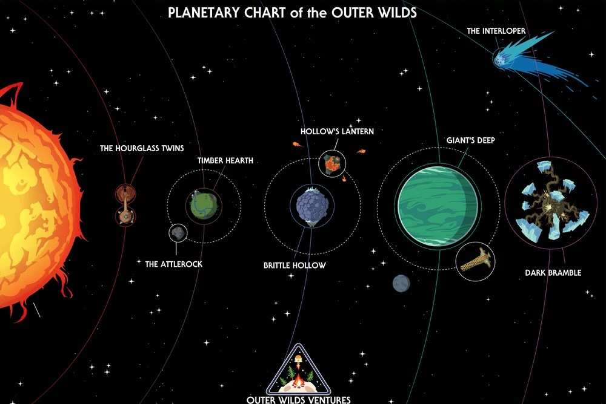

Alguns jogos são feitos para serem zerados. Outer Wilds foi feito para ser descoberto.
A música de Andrew Prahlow captura solidão e esperança perante o universo. Cada trilha consegue te contar a história por trás de cada monumento.
Você encontra a história em pedaços, fora de ordem, você é um arqueólogo espacial. Cada descoberta muda sua interpretação de tudo que veio antes.
Uma única escolha, e o momento onde é bom entender, que algumas coisas são maiores que você. E que no fim, vale mais apena descansar... e cheirar os pinheiros pelo caminho.
Eu não consigo por em tão poucas palavras o por quê esse jogo é assim. Qualquer pedaço de informação dita poderá estragar uma futura experiência, então tudo que eu posso dizer é que Outer Wilds é uma obra de arte.

"O fim é apenas um novo começo."